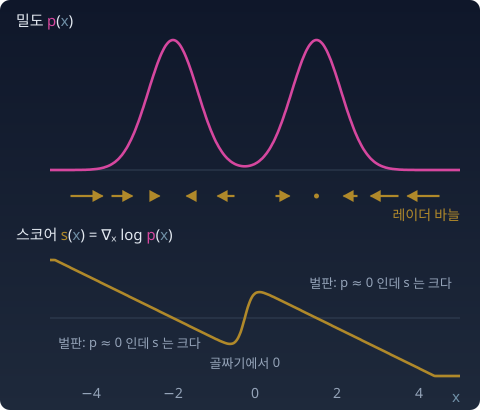

디퓨전
지도는 여행이 아니다. 지도를 들고 실제 세계를 걸어봐야 한다.
여기서부터가 그 걸음이다.
추론은 “이미 있는 데이터에서 숨겨진 구조를 찾는” 것이었다. 이 장의 일은 반대쪽이다. 그림을 그려 주는 생성 모델에 「바닷가의 고양이」라고 적으면, 모델은 아무 의미 없는 무작위 숫자 덩어리(노이즈)에서 출발해 수십 번에서 많게는 천 번까지 조금씩 고쳐 그림 한 장을 내놓는다. 버튼을 다시 누르면 다른 노이즈에서 출발해 다른 고양이가 나온다. 사람들은 하루에도 수없이 이 버튼을 누른다.
그런데 그 노이즈는 그림과 얼마나 멀리 떨어져 있을까? 가로세로 256픽셀짜리 컬러 사진 한 장은 픽셀마다 빨강·초록·파랑 세 숫자를 가지므로 256 × 256 × 3 = 196,608개, 약 20만 개의 숫자다. 곧 20만 차원 공간의 점 하나다. 그 공간에서 숫자 20만 개를 아무렇게나 뽑으면 거의 확실하게 지지직거리는 노이즈가 나온다. 고양이, 풍경, 얼굴처럼 의미 있는 이미지는 그 거대한 공간의 아주 좁은 곳에만 모여 있다는 뜻이다. 이 관찰을 매니폴드 가설이라고 부른다. 매니폴드는 큰 공간 안에 놓인, 차원이 낮은 매끈한 면이다. 3차원 방 안에 펼쳐 놓은 종이 한 장(2차원)을 떠올리면 된다. 매니폴드 가설은 실제 데이터가 고차원 공간 전체에 퍼져 있지 않고 그런 저차원 면 근처에 모여 있다는, 증명이 아니라 경험에서 나온 주장이다.
그러면 물음은 이렇게 된다. 넓은 공간 아무 데서나 출발한 점이, 어떻게 그 좁은 곳을 찾아 걸어 들어가는가? 노이즈에서 이미지가 태어나는 일은 마법인가, 아니면 지금까지 배운 도구들의 조합인가?
스코어: 로그 밀도의 기울기라는 레이더
20만 차원은 그릴 수 없다. 그래서 공간을 2차원 평야로, 의미 있는 이미지가 모인 좁은 곳을 평야 위의 작은 봉우리 몇 개로 줄여 보자. 차원은 줄었지만 「넓은 곳에 떨어진 점이 좁은 곳을 찾아가야 한다」는 처지는 그대로다.
드래곤볼 찾기 — 레이더만 보고 걸어라
드래곤볼 찾기 대회. 넓은 평야에 드래곤볼 7개가 숨겨져 있다. 참가자 수천 명이 평야의 아무 지점에 랜덤으로 떨어진다. 주최 측은 각 참가자에게 드래곤 레이더를 하나씩 나눠준다. 규칙은 하나 — 레이더 바늘만 보고 걸어라.
전파 지형 — 봉우리가 일곱 개인 밀도
각 드래곤볼이 전파를 내보낸다. 한 개의 볼이 만드는 신호 강도는 거리에 따라 가우시안 모양으로 약해진다. 가까우면 강하고, 멀면 약하다. 7개의 신호가 합쳐지면 땅 위에 전파 강도 지도가 만들어진다. 봉우리가 7개인 지형.
이것은 혼합분포(mixture)다. 가우시안 7개에 볼마다 신호의 크기(혼합 비중)를 곱해 더한 분포다. 전파 강도 지도 = 확률밀도 p(x).
레이더의 원리 — 로그 밀도의 기울기
레이더 바늘이 가리키는 방향은 "여기서 신호가 가장 빠르게 커지는 방향"이다. 다만 신호 자체가 아니라 신호의 로그가 가장 빠르게 커지는 방향이다. 아래 그림은 봉우리가 둘인 1차원 지형으로 이 바늘을 그린 것이다.

"스코어"라는 이름은 모수(분포를 정하는 숫자, 예: 가우시안의 평균과 분산) 쪽에서도 쓰인다. 이름은 같지만 미분하는 변수가 다르다. 모수에 대한 스코어 ∇θ log pθ(x)는 모수 θ를 흔들어 보는 기울기다. 분포족(모수만 바꾼 분포들의 모임) 안에서 어느 쪽으로 움직이면 이 데이터가 더 그럴듯해지는가. 여기의 스코어, 곧 데이터에 대한 스코어 ∇ₓ log p(x)는 분포는 그대로 두고 점 x를 움직여 보는 기울기다. 평야 위에서 어느 쪽으로 걸으면 더 그럴듯한 곳에 닿는가. 둘 다 "로그를 미분한다"는 같은 가족이다. 이 장에서 스코어라고 하면 늘 ∇ₓ 쪽이다.
왜 log인가
가장 중요한 이유부터. 실제 문제에서 우리는 밀도를 상수배까지만 안다. p(x) = p̃(x) / Z 에서 p̃는 계산할 수 있지만, 정규화 상수 Z(전체 합이 1이 되게 나눠 주는 수)는 온 평야에 걸친 적분이라 계산할 수 없다. 그런데 로그를 씌우고 x로 미분하면 Z가 사라진다.
Z는 x와 무관한 상수라서 기울기가 0이다. 레이더는 전체 지도의 총량을 몰라도 만들 수 있다. log p = θ·t(x) − F(θ) 꼴의 분포 모임(지수족)에서도 합을 1로 맞추는 F(θ)(로그정규화자)를 계산하는 것이 늘 가장 어려운 일이다. 이것을 생각하면 얼마나 큰 해방인지 알 수 있다. 디퓨전 모델이 밀도 대신 스코어를 배우는 첫째 이유가 이것이다.
두 번째 이유는 비율이다. 신호가 0.001인 벌판 한가운데서 0.0001만큼 커지는 것과, 신호가 0.5인 볼 근처에서 0.0001만큼 커지는 것은 의미가 다르다. 벌판에서의 미세한 변화를 놓치면 참가자는 영원히 허허벌판을 헤맨다. 비율로 봐야 한다. 그래서 ∇log p = ∇p / p.
연봉 3000만원의 300만원 인상과 3억의 300만원 인상은 다르다. 드래곤 레이더는 이 구분을 할 줄 아는 기기다.
혼합의 스코어
전파 지형이 가우시안 혼합이면 레이더 바늘을 손으로 계산할 수 있다.
봉우리 폭에 아래첨자 0을 붙여 s₀로 적은 것은 스코어 s와 글자가 겹치지 않게 하려는 것뿐이다. π도 원주율이 아니라, 혼합 비중에 흔히 쓰는 글자다. 읽는 법은 이렇다. 볼 하나만 있으면 바늘은 곧장 그 볼을 가리킨다. (μk − x)/s₀². 볼이 여럿이면 바늘은 각 볼을 향한 방향의 가중평균이고, 그 무게가 책임도 γk, 곧 지금 이 신호가 볼 k에서 왔을 사후확률이다. 가까운 볼일수록, 신호가 큰 볼일수록 무게가 크다.
불러오는 중…
파이썬
import numpy as np
mu = np.array([[-2.5, -1.5], [1.5, -2.0], [-1.0, 2.0], [2.5, 1.5],
[0.0, 0.0], [-2.0, 0.5], [1.0, -0.5]]) # 봉우리 7개
w = np.array([.18, .14, .16, .14, .12, .13, .13]) # 혼합 비중 (합 1)
s = 0.4 # 봉우리 폭
def p_tilde(x): # 정규화 안 한 밀도: 상수 1/(2π s²) 를 일부러 뺐다
d2 = ((x - mu)**2).sum(1)
return (w * np.exp(-d2 / (2 * s**2))).sum()
def score(x): # 책임도 가중 평균: Σ γ_k (μ_k − x)/s²
d2 = ((x - mu)**2).sum(1)
lg = np.log(w) - d2 / (2 * s**2)
g = np.exp(lg - lg.max()); g /= g.sum()
return (g[:, None] * (mu - x)).sum(0) / s**2
def fd(f, x, h=1e-5): # 유한차분 기울기
return np.array([(f(x + h * e) - f(x - h * e)) / (2 * h) for e in np.eye(2)])
x = np.array([0.6, 0.9])
print("해석식 스코어 ", score(x).round(4))
print("log p̃ 유한차분 ", fd(lambda u: np.log(p_tilde(u)), x).round(4))
print("log(p̃/Z) 유한차분 ", fd(lambda u: np.log(p_tilde(u) / 123.4), x).round(4))
for x in [np.array([0.6, 0.9]), np.array([3.5, -3.5])]:
print(x, "|∇p̃| =", f"{np.linalg.norm(fd(p_tilde, x)):.1e}",
" |∇log p| =", f"{np.linalg.norm(score(x)):.2f}")
# 해석식 스코어 [-3.4203 -5.7833]
# log p̃ 유한차분 [-3.4203 -5.7833]
# log(p̃/Z) 유한차분 [-3.4203 -5.7833]
# [0.6 0.9] |∇p̃| = 2.2e-02 |∇log p| = 6.72
# [ 3.5 -3.5] |∇p̃| = 7.2e-09 |∇log p| = 15.63
Z를 아무 값(여기서는 123.4)으로 바꿔도 스코어는 한 자리도 변하지 않는다. 구석 (3.5, −3.5)에서 밀도의 기울기는 10⁻⁹ 수준으로 사라지지만, 스코어는 오히려 더 크다.
수확
“레이더 바늘은 ∇ₓ log p다. 정규화 상수를 몰라도 만들 수 있고, 벌판에서도 꺼지지 않는다.”
문제 1. 눈금이 지워진 방문자 그래프
블로그 방문자 수 그래프를 캡처했는데 세로축 눈금이 잘려 나갔다. 막대 높이는 어제 4칸, 오늘 4.4칸이다. 한 칸이 몇 명인지는 모른다. (가) 오늘 방문자는 어제보다 몇 명 늘었는가? (나) 몇 퍼센트 늘었는가? (다) 방문자 수의 로그는 얼마나 늘었는가?
함께 풀기

한 칸이 몇 명인지 모르면 아무것도 못 구하는 거 아니에요? 한 칸이 10명이면 4명 늘었고, 1,000명이면 400명 늘었어요.

(가)는 정말 그래요. 그럼 (나)도 한 칸의 크기에 따라 달라져요?

아니요. 한 칸을 c명이라 하면 (4.4c − 4c)/4c = 0.1이라 c가 약분돼요. 10% 늘었어요.

(다)는 log 4.4c − log 4c = log 1.1 = 0.0953이네. 이것도 c가 빠져. 로그를 씌우면 모르는 배율이 그냥 더해지는 상수가 되니까, 차이를 내는 순간 사라지는 거구나.
레이더가 하는 일이 그거예요. 밀도의 눈금, 곧 정규화 상수 Z를 몰라도 로그의 변화는 읽혀요.
조교가 성적을 100점 만점으로 줬는지 10점 만점으로 줬는지 몰라도, 누가 지난번보다 몇 퍼센트 올랐는지는 말할 수 있는 거랑 같네요.
문제 2. 두 봉우리의 레이더
1차원 혼합 p(x) = 0.8·N(x; 2, 1) + 0.2·N(x; −2, 1)을 생각한다. (가) 스코어 ∇log p(x)를 책임도로 쓴 식으로 유도하고, x = 0에서의 값을 구하라. (나) x = 45에서 log p를 유한차분으로 미분하면 무엇이 나오는가? 해석식은 얼마를 주는가?
함께 풀기
(가)는 금방이에요. 두 가우시안을 더한 것의 로그를 미분하면 각 성분 스코어의 가중평균이에요. x = 0은 두 봉우리의 한가운데니까 (2 − 0)과 (−2 − 0)이 반반 섞여서 0이에요.
가운데에서 바늘이 멈춘다는 말이네요. 그럼 x = 0에서 걷기 시작한 참가자는 어디로 가요?
아무 데도요. 기울기가 0인 점(정류점)이니까요.
근데 위젯에서 비슷한 걸 해 보면 가운데서도 무거운 쪽으로 바늘이 기울던데.
서연 학생, 가중평균의 무게를 다시 써 봐요. 무게가 N₁/(N₁ + N₂)였어요?

아… π가 빠졌어요. γ₁ = 0.8·N₁ / (0.8·N₁ + 0.2·N₂)예요. x = 0에서 N₁ = N₂라서 γ₁ = 0.8이에요. 스코어는 0.8 × 2 + 0.2 × (−2) = 1.2예요.
가운데는 정류점이 아니에요. 신호가 큰 볼 쪽으로 기울어요. 로그의 합을 미분한 게 아니라 합의 로그를 미분한 거라, 비중이 분자와 분모에 같이 남아요.
그래요. 로그가 곱은 풀어 주지만 합은 못 풀어요. 그래서 비중이 책임도 안에 살아남아요. 민준 학생은 (나)를 해 봤어요?

네, 그런데 이상해요. x = 5에서는 −3.000, x = 30에서는 −28.000이 깔끔하게 나오는데, x = 45에서는 nan이 나와요. 스코어가 거기서 정의가 안 되는 건가요?
x = 45에서 p(x) 자체는 얼마쯤이에요?
(45 − 2)²/2가 924.5니까 e−924.5… 아, float64의 가장 작은 수가 10−324쯤이니까 0으로 뭉개졌어요. log 0이 −inf고, −inf 빼기 −inf가 nan이에요.
스코어는 멀쩡해요. 해석식으로는요?
거기선 γ₁이 사실상 1이니까 (2 − 45)/1 = −43이요. 멀어질수록 직선으로 커지기만 해요. 망가진 건 스코어가 아니라 밀도를 먼저 계산한 제 순서였네요.
조별 과제 점수를 곱해서 평균 내다가 0점이 하나 끼면 다 날아가는 거랑 같네요. 로그로 먼저 바꿔서 더했어야 했는데.
실제 코드도 그래서 log-sum-exp로 계산해요. 이 장의 파이썬도 책임도를 로그에서 최댓값을 빼고 계산했어요.
문제 3. 에너지만 아는 모델의 레이더
ML에는 밀도를 정규화하지 않은 채로 쓰는 모델이 많다. 신경망이 점 x마다 「에너지」 E(x)라는 숫자 하나를 내놓고, 확률은 p(x) = e−E(x) / Z로 정한다(에너지 기반 모델). 1차원 장난감으로 E(x) = (x² − 1)²를 쓴다. 골짜기가 x = ±1 에 있는 에너지다. (가) x = 0.5와 x = 2에서 스코어를 구하라. (나) 이 계산에 Z가 필요했는가? x가 1,000차원이면 Z를 구하는 일은 어떻게 되는가?
함께 풀기
log p = −E − log Z니까 미분하면 E′이죠. E′(x) = 4x(x² − 1)이고, x = 0.5에서 4 × 0.5 × (−0.75) = −1.5예요.
0.5에 선 사람에게 가장 가까운 골짜기는 어느 쪽이에요? 바늘은 그쪽을 가리켜야 하죠.
골짜기는 +1이니까 오른쪽인데, −1.5면 왼쪽을 가리켜요. 아, 마이너스가 붙은 걸 미분하면서 떨어뜨렸어요. 스코어는 −E′이라 +1.5예요. x = 2에서는 −4 × 2 × 3 = −24로, 골짜기 1 쪽으로 세게 끌어요.
에너지가 낮은 곳이 확률이 높은 곳이니까, 바늘은 에너지의 내리막을 가리키는 게 맞아. (나)는 Z를 한 번도 안 썼어요. 1차원이면 적분해서 Z ≈ 1.974가 나오지만, 1,000차원이면 축마다 점 100개만 찍어도 1001000개의 점에서 e−E를 계산해야 해요.
그래서 정규화하지 않은 모델을 배우거나 그 모델에서 샘플을 뽑을 때 스코어로 일하는 거예요. 앞의 방문자 그래프에서 눈금을 몰라도 로그의 변화가 읽힌 것과 같은 이유예요.